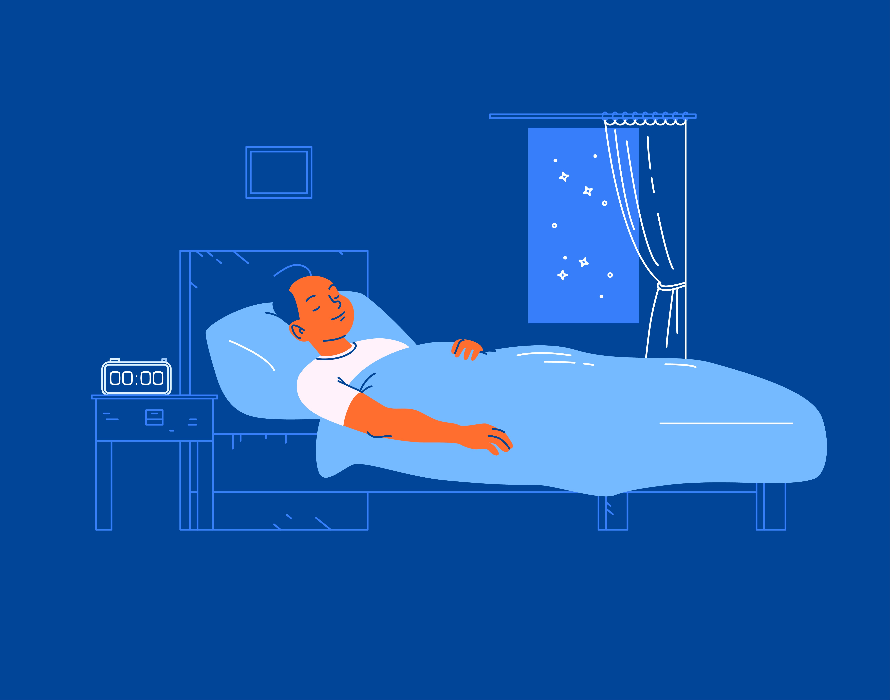
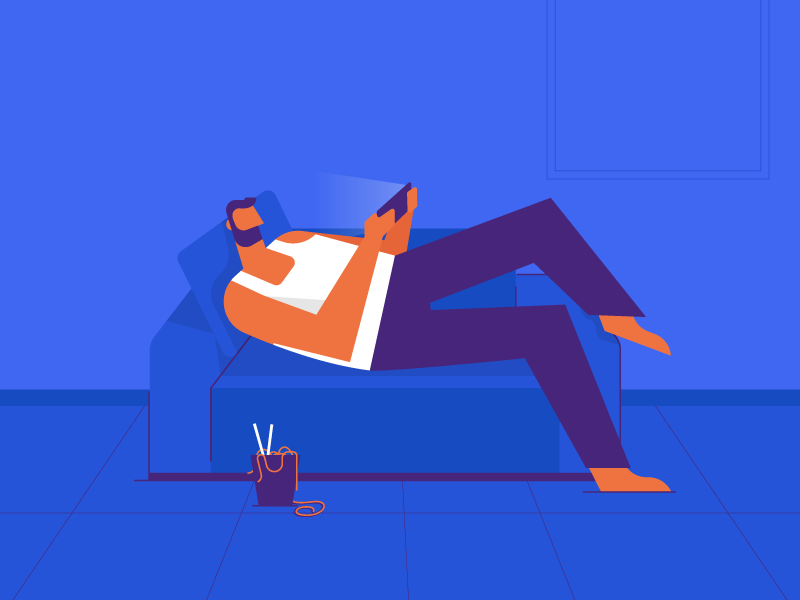
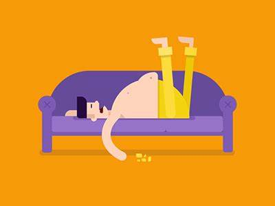
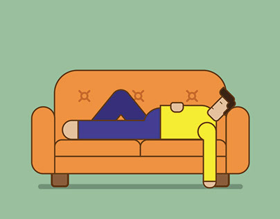

O Poder do Descanso

O sono é vital para a saúde física e mental, permitindo a regeneração do corpo e a consolidação da memória. Durante o sono, ocorrem processos essenciais como a síntese de proteínas e a liberação de hormônios. A falta de sono pode resultar em problemas cognitivos, de humor e aumentar o risco de doenças. Valorizar o sono e garantir sua qualidade é essencial para uma vida saudável e produtiva.
Sono Restaurador

O sono é essencial para restaurar corpo e mente, com processos de reparação e consolidação de memórias. Interrupções prejudicam a saúde. Priorizar um sono de qualidade é crucial para a vida equilibrada. Rotina regular e ambiente propício são essenciais. Em suma, o sono é vital para uma vida plena.
Recarregando as Baterias

O sono é essencial para recarregar as energias e enfrentar os desafios diários. Durante o sono, o corpo passa por processos de recuperação e regeneração. A privação do sono pode afetar negativamente a saúde e a cognição. Portanto, é crucial priorizar uma boa higiene do sono para garantir uma vida plena e produtiva.
Além dos Sonhos

O sono vai além dos sonhos, sendo crucial para a saúde física, mental e emocional. Durante o sono, o corpo se recupera e consolida a memória, além de regular o humor. Priorizar uma boa higiene do sono é essencial, incluindo estabelecer uma rotina regular e um ambiente propício. Isso garante uma vida plena e saudável.